As the global shift toward electric vehicles (EVs) and renewable energy systems accelerates, the world faces an unprecedented challenge: managing the mounting volume of aged lithium-ion batteries. With over 100 million EV batteries expected to retire in the next decade and India alone projected to generate more than 5 million tonnes of lithium-ion battery waste by 2035, the question of what to do with these batteries has become critical.
Two primary pathways have emerged as viable solutions: recycling and repurposing. Each approach offers distinct advantages, and understanding their differences is essential for making informed decisions about battery end-of-life management.
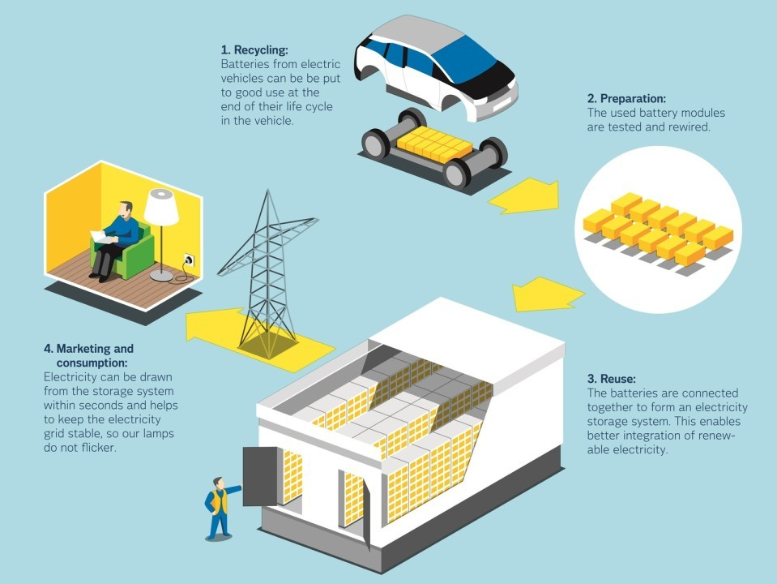
Understanding Battery End-of-Life Options
When an electric vehicle battery can no longer meet the demanding performance requirements of automotive applications—typically when capacity drops to 70-80% of its original value—it enters the end-of-life phase. However, this doesn't mean the battery is completely useless. Three main management pathways exist: disposal (which is largely prohibited by regulations), recycling (recovering valuable materials), and repurposing (giving batteries a second life in less demanding applications).
Recycling involves breaking down batteries to extract valuable metals and materials such as lithium, cobalt, nickel, and manganese for use in new battery production. Repurposing, also known as second-life applications, involves reusing batteries that retain 70-80% of their original capacity in stationary energy storage systems, backup power applications, or grid services.
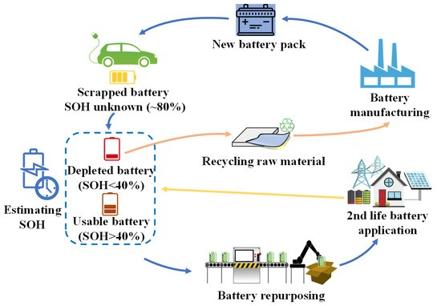
The Case for Repurposing: Extending Battery Value
Repurposing offers compelling advantages that make it an attractive first option before recycling. When EV batteries reach their automotive end-of-life, they still retain substantial storage capacity. These batteries can serve effectively in stationary energy storage systems for another 10+ years, providing significant economic and environmental benefits.
Economic Advantages of Repurposing
The economic benefits of battery repurposing are substantial. Second-life batteries can be 30 to 70 percent less expensive than new batteries in stationary applications, making energy storage more accessible and cost-effective. For India specifically, repurposing batteries reduces initial investment costs for energy storage, making renewable energy systems more economically viable. This cost advantage stems from the fact that these batteries have already covered the majority of their amortization costs during their first usage.
Research demonstrates that second-life battery projects show the lowest equivalent annual cost (EAC), making them the most viable industrial process for the first 10 years of a typical project. For businesses and consumers, this translates to significant cost savings while maximizing the value of batteries over their entire lifespan.
Environmental Benefits
From an environmental perspective, repurposing delivers impressive sustainability gains. Reuse and repurposing emit 90% less CO₂ equivalent compared to direct mining and 40% less than recycling. Studies show that optimized pathways for lithium iron phosphate (LFP) batteries improve profits by 58% and reduce emissions by 18% compared to hydrometallurgical recycling without reuse.
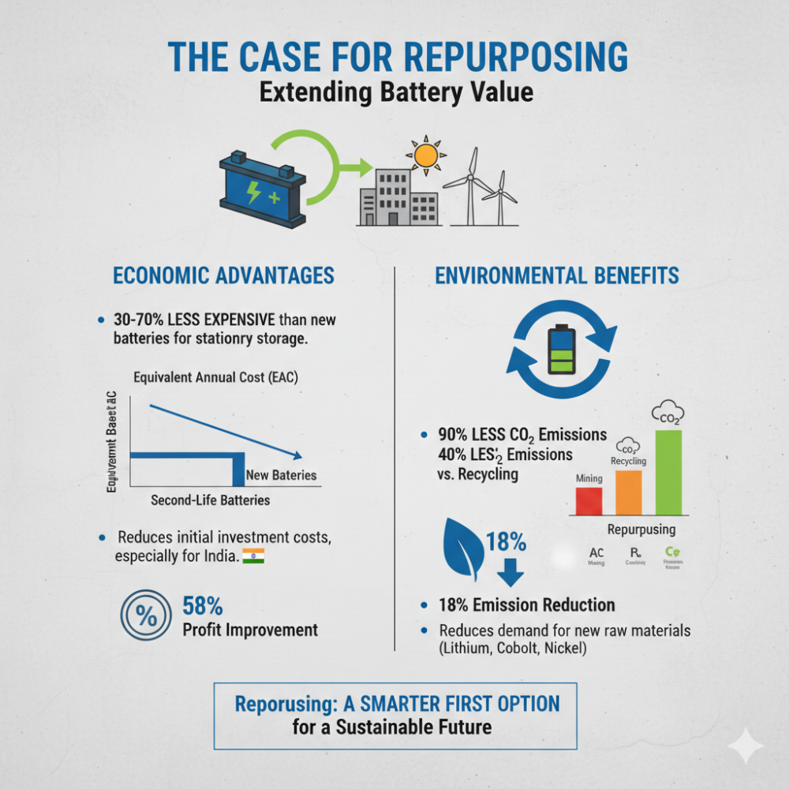
By extending battery life through repurposing, the demand for new battery production is reduced, which in turn decreases the need for mining critical materials like lithium, cobalt, and nickel. This circular economy approach helps preserve valuable resources and reduces the ecological footprint associated with battery manufacturing.
Applications for Repurposed Batteries
Second-life batteries find numerous applications across different sectors. Stationary energy storage systems represent the primary application, where repurposed batteries store excess energy from renewable sources like solar and wind for use during periods of low generation. Commercial and industrial applications use second-life batteries for peak load management and energy optimization.
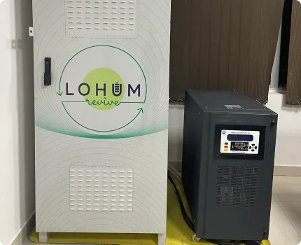
In India, companies like Lohum Foundation have partnered with MG Motors India to recycle end-of-life EV batteries into 5kWh battery energy storage systems, while Vision Mechatronics Private Limited® launched India's first high-voltage second-life battery system called ReLiVE. These systems provide cost-effective energy solutions for industrial facilities and support grid stability.
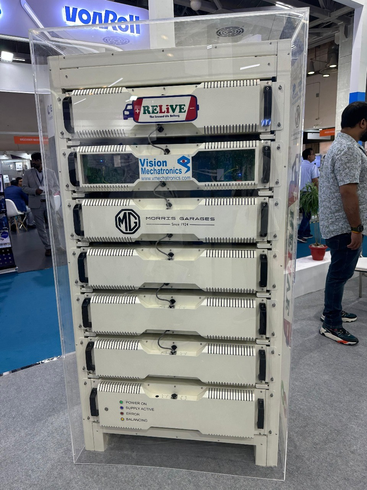
Additional applications include backup power systems, EV charging hubs, rural energy storage projects, and telecommunications infrastructure. The flexibility of stationary applications allows for better temperature management and optimal environmental conditions compared to automotive use.
The Recycling Imperative: Material Recovery
While repurposing offers significant benefits, recycling remains essential for closing the battery materials loop and ensuring sustainable resource management. Recycling becomes the necessary next step when batteries can no longer perform adequately even in second-life applications, or when direct recycling is more economically advantageous.
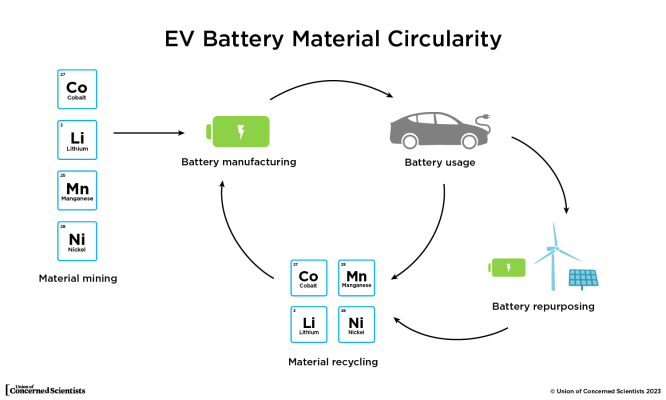
Recycling Technologies and Processes
Three primary recycling technologies dominate the lithium-ion battery recycling landscape: pyrometallurgy, hydrometallurgy, and direct recycling. Each method has distinct advantages and applications.
Pyrometallurgy uses high-temperature treatment to recover metals but is energy-intensive and struggles with recovering lithium, aluminum, and manganese. Despite these limitations, it remains valuable for processing certain battery chemistries, particularly LFP batteries where the low-value metals make hydrometallurgy's chemical requirements less cost-effective.
Hydrometallurgy employs chemical dissolution processes and has slight advantages in terms of research volume and efficiency for recovering high-value metals. This method can achieve recovery rates of up to 99% for lithium and other valuable materials. Industrial data shows that circular pathways using hydrometallurgy can reduce energy consumption by 77.1% and CO₂ emissions by 57.7% compared to conventional material production.
Direct recycling aims to retain the electrode's chemical structure and is considered the most environmentally friendly option. Studies using multi-criteria decision-making approaches consistently rank direct recycling as the best alternative, being the most energy-efficient (510-760 KJ/Kg) while producing high CO₂ emissions (0.95-1.85 Kg/Kg).
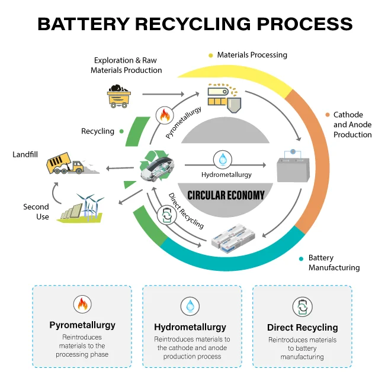
Material Recovery and Value
Recycling enables the recovery of critical materials that are subject to supply chain vulnerabilities and price volatility. More than 95% of lithium and other materials from EV batteries can be recycled and reused to make new EV batteries or utilized in different industrial applications. Converting mixed-stream lithium-ion batteries into battery-grade materials reduces environmental impacts by at least 58%.
The recovery of valuable metals reduces reliance on imported raw materials and increases domestic independence in battery production. For countries like India, which depend heavily on imported battery materials, recycling presents an opportunity to build a more self-sufficient battery supply chain while reducing environmental impact.
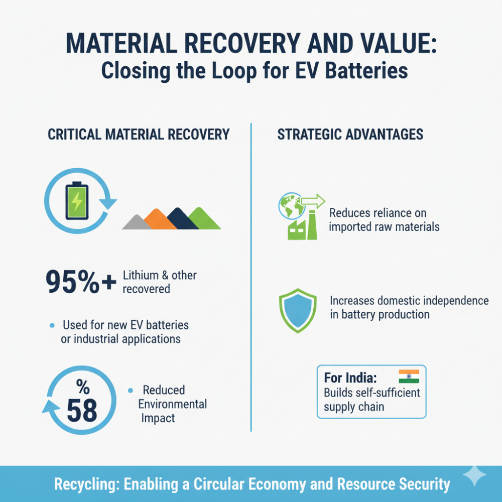
Safety Considerations in Battery Management
Both recycling and repurposing involve significant safety considerations, particularly related to thermal runaway risks. Thermal runaway occurs when battery cells malfunction due to damage, mechanical failure, or overvoltage, leading to rapid temperature increases, fires, and potentially explosions.
Batteries are currently the biggest fire risk for recycling and waste sites globally. Damaged, defective, or recalled (DDR) batteries require special handling procedures, including storage in climate-controlled spaces with good ventilation, installation of advanced fire detection and suppression equipment, and conducting frequent visual and thermal inspections.
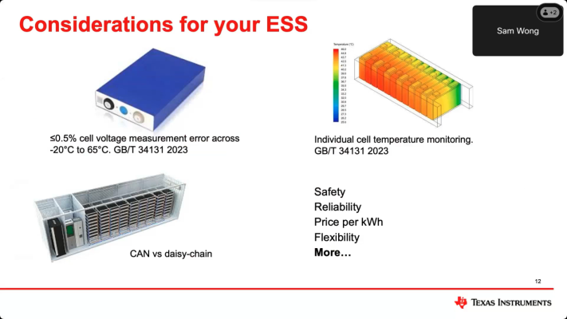
Proper safety protocols include training staff to handle batteries safely, isolating battery terminals with non-conductive materials, preventing damage during handling, and maintaining emergency response plans. Infrared camera systems can detect early signs of thermal runaway by monitoring heat generation before smoke or flames appear.
Regulatory Framework and Policy Support
India has established a comprehensive regulatory framework through the Battery Waste Management Rules, 2022, which implements Extended Producer Responsibility (EPR) principles. These rules mandate that producers are responsible for collection and recycling/refurbishment of waste batteries and require the use of recovered materials from waste in new battery production.
The 2025 amendments to these rules have strengthened the framework by requiring QR code labeling for traceability, establishing centralized online portals for monitoring, and setting minimum recovery targets for recyclers. From 2027 onward, producers will be required to use domestically recycled battery materials in new batteries.
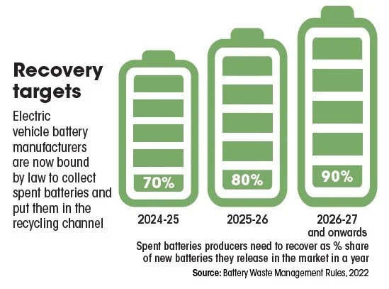
Government support includes the National Framework 2023 for promoting energy storage systems, which provides substantial financial support of up to 40% of capital costs through Viability Gap Financing (VGF). The Recycling Linked Incentive (RLI) program encourages proper disposal and recycling of end-of-life EVs and batteries.
Making the Right Choice: Decision Framework
The choice between recycling and repurposing depends on multiple factors including battery condition, economic considerations, and application requirements. The optimal approach often involves a sequential strategy where batteries are first evaluated for repurposing potential before proceeding to recycling.
Battery Assessment Criteria
Key assessment criteria for determining the appropriate pathway include State-of-Health (SOH) testing, internal impedance measurements, and capacity retention evaluation. Batteries with 70-80% SOH are generally suitable for second-life applications, while those below this threshold may be better candidates for immediate recycling.
Battery chemistry also influences the decision. Research indicates that the relative advantage of repurposing before recycling is greatest for batteries with lower-value cathodes such as lithium iron phosphate (LFP). NMC batteries may show higher immediate recycling returns due to their valuable cobalt and nickel content, but LFP batteries provide superior long-term benefits through reuse before recycling.
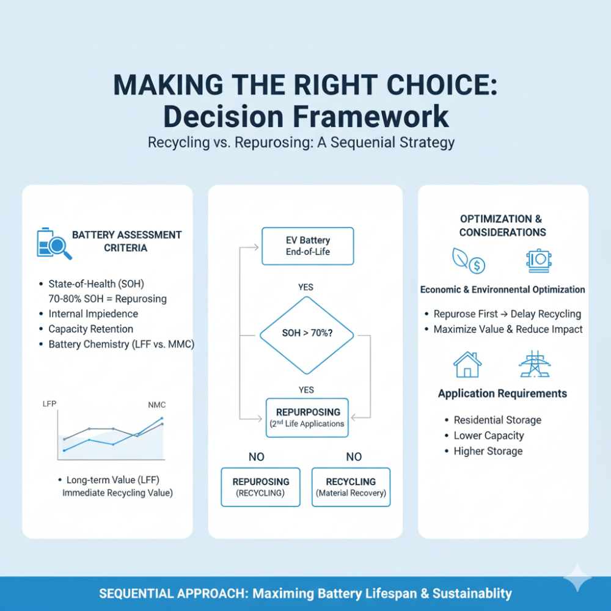
Economic and Environmental Optimization
For maximizing both economic and environmental benefits, the optimal pathway often involves repurposing first, followed by recycling. This sequential approach delays recycling, maximizes battery value, and reduces overall environmental impact. However, the specific choice depends on market conditions, battery availability, and regulatory requirements.
The decision should also consider the capacity configuration requirements of different applications, ranging from residential energy storage (lower capacity needs) to grid-scale storage systems (higher capacity requirements).
The Indian Context: Building a Circular Economy
India's approach to battery end-of-life management reflects its broader circular economy goals and energy independence objectives. With the government's target of developing 4 GWh worth of Battery Energy Storage Systems (BESS) projects by 2030, second-life batteries offer a crucial pathway to achieve these goals cost-effectively.
The development of India's second-life battery ecosystem involves multiple stakeholders. Companies like Attero Recycling plan to recycle 50,000 tonnes annually by 2027, while Lohum focuses on second-life applications through partnerships with automotive manufacturers. These public-private collaborations are essential for building the infrastructure needed to manage the growing volume of end-of-life batteries.
India's strategy emphasizes both approaches as complementary rather than competing solutions. The Battery Waste Management Rules promote both recycling and refurbishment activities, recognizing that a comprehensive approach is needed to address the scale of the challenge.
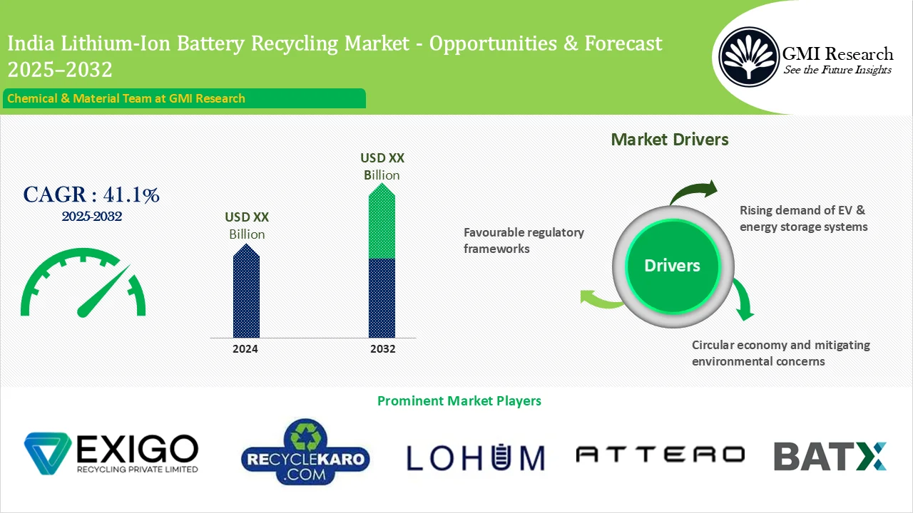
Future Outlook and Recommendations
The future of battery end-of-life management lies in developing integrated systems that optimize both repurposing and recycling pathways. Key recommendations for stakeholders include:
- For policymakers: Strengthen regulatory frameworks that support both recycling and repurposing activities, provide financial incentives for circular economy initiatives, and ensure proper safety standards are maintained throughout the value chain.
- For industry: Develop standardized processes for battery assessment and sorting, invest in safety infrastructure and training, and build partnerships across the value chain to ensure efficient material flows.
- For technology developers: Focus on improving battery design for easier disassembly and reuse, develop better diagnostic tools for assessing battery condition, and advance recycling technologies to improve efficiency and reduce environmental impact.
The ultimate goal is creating a circular battery economy where batteries serve multiple lives before their materials are recycled into new batteries. This approach maximizes resource utilization, minimizes environmental impact, and supports the transition to sustainable energy systems. As battery technology continues to evolve, so too must our approaches to managing their end-of-life, ensuring that today's clean energy solutions don't become tomorrow's waste problem.